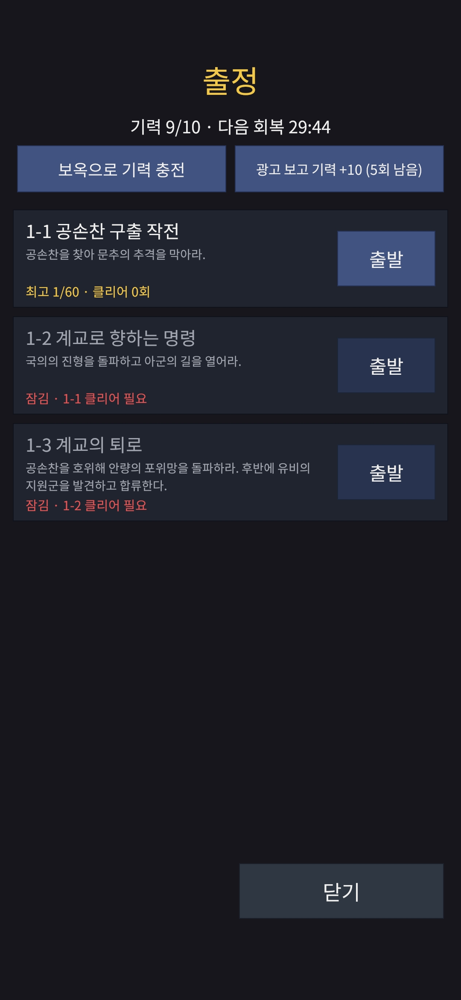
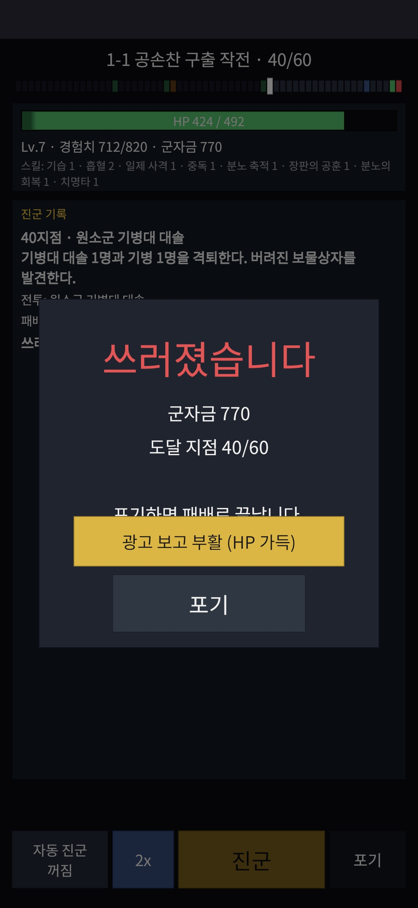

작업 목표
지난 단계까지 「조자룡이 간다!」는 전투, 성장, 상점, 상자까지 실기기에서 한 바퀴 도는 상태였다. 이번 목표는 수익 모델의 한 축인 보상형 광고를 붙이는 것이었다. 광고를 보면 기력을 채우고, 쓰러졌을 때 한 번 부활하고, 보스를 잡은 뒤 상자를 하나 더 받는다. 유료 패키지(상산 팩)를 산 사람은 같은 보상을 광고 없이 받는다.
작업 결과
광고 단위 여섯 개(세 자리 × Android·iOS)에 서버 측 인증을 걸었고, 두 폰에서 실제 광고를 보고 Google의 콜백이 게임 서버에 도착해 보상이 지급되는 것까지 확인했다. 기기 세션에서 찾은 흐름 결함은 같은 작업 안에서 고쳐 다시 검증했다.


기력 충전, 부활, 보스 상자 2배. Android와 iOS 광고 단위 여섯 개 모두에 서버 콜백 URL을 등록했다.
두 폰에서 본 광고의 콜백 11건이 서명 검증을 통과했고, 티켓마다 정확히 한 번씩 지급됐다.
기기 세션에서 찾은 흐름 결함 네 가지를 같은 작업 안에서 고치고 다시 확인했다.
서버 테스트 1447 → 1465, Unity 편집기 테스트 271 → 296. 경고 0으로 빌드한다.
클라이언트의 “광고 봤어요”를 믿지 않기로 했다
이전 게임 「흰둥이는 퐁퐁퐁」은 광고 SDK가 기기 안에서 올려 주는 “보상 획득” 이벤트를 받아 서버에 알리고, 서버는 그 말을 믿고 보상을 줬다. 간단하고 외부 의존이 없다. 하지만 수정된 앱이나 재전송 도구로 그 요청을 흉내 내면 광고 없이 보상이 나간다.
클라이언트 보고를 신뢰
- SDK의 보상 이벤트 → 클라이언트가 서버에 “받았다” 보고
- 외부 통신 없음, 구현 작음
- 요청을 위조하면 보상이 그대로 나감
서버 측 인증(SSV)
- Google이 “이 기기에서 이 광고가 끝났다”를 서명해 게임 서버로 직접 보냄
- 서버가 Google 공개 키로 서명을 검증한 뒤에만 지급
- 비용: 공개 키를 받아 올 아웃바운드 HTTPS 하나, 콘솔에 URL 등록 한 번
티켓을 먼저 발급하고, 콜백이 와야 이행한다
광고 한 번의 흐름을 서버가 발급하는 티켓 하나로 묶었다. 티켓은 자격 검사(기력이 상한 미만인가, 지금 쓰러진 런이 있는가, 방금 보스를 잡았는가, 오늘 횟수가 남았는가)를 통과해야 나오고, Google의 서명된 콜백이 도착해야 이행된다. 클라이언트는 그 뒤에 “내 보상 확인해 줘”를 보낼 뿐이다.
티켓 발급
서버가 자격을 검사하고 티켓을 발급한다. 자리마다 열린 티켓은 하나뿐이다.
광고 재생
클라이언트가 티켓 ID를 광고 요청에 실어 보상형 광고를 띄운다.
Google → 서버
광고가 끝나면 Google이 서명한 콜백을 게임 서버의 HTTPS 경로로 보낸다. 서버가 서명과 티켓을 확인하고 이행한다.
보상 확인
클라이언트가 티켓 상태를 묻는다. 지급됨 · 대기 중 · 거부됨 셋 중 하나가 돌아온다.
서버가 지키는 규칙
- 서명 없음, 서명 불량, 모르는 티켓, 만료된 티켓, 다른 사용자, 같은 거래 ID 재전송은 모두 200으로 답하되 지급하지 않는다. 재시도해도 결과가 달라질 수 없기 때문이다.
- Google 공개 키를 받아 오지 못했을 때만 503으로 답해 Google이 다시 보내게 한다.
- 서명과 전체 쿼리는 로그에 남기지 않는다. 사유와 티켓 ID만 남긴다.
- 일일 상한은 자리마다 5회, 이행된 티켓 기준, 하루 경계는 한국·일본 시간 자정.
클라이언트가 지키는 규칙
- 보상 확인은 1 · 2 · 4 · 8 · 8초 간격으로 다시 시도하고, 그동안 “확인 중”을 보여 준다.
- 네트워크가 끊겨도 “보상 다시 확인” 버튼을 남겨 두고, 서버가 이미 지급했으면 새 광고 없이 정리한다.
- 한 번 재확인해도 여전히 대기 중이면 티켓을 놓고, 다음 탭에 새 광고를 띄운다. 서버는 티켓을 한 번만 이행하므로 늦게 온 첫 콜백이 이중 지급을 만들지 못한다.
- 유료 패키지 보유자는 같은 버튼으로 광고 없이 받는다. 티켓이 발급 시점에 바로 이행된다.
광고 SDK를 넣는 일이 광고 로직보다 오래 걸렸다
Google Mobile Ads Unity 플러그인 11.6.0을 넣는 과정에서 패키지 관리, Android 권한, iOS 추적 허용 세 곳에서 결정이 필요했다. 이 프로젝트는 외부 패키지를 모두 정확한 버전과 해시로 고정하기 때문에, 광고 SDK도 같은 규칙을 지켜야 했다.
패키지 형태와 의존성 관리자
플러그인의 UPM 형태는 Unity의 새 의존성 관리자를 요구하는데, 이미 쓰고 있는 Firebase는 Google의 예전 관리자에 묶여 있어 둘을 함께 설치할 수 없었다. 플러그인을 .unitypackage로 받아 프로젝트에 파일로 넣고, 아카이브의 해시와 파일 목록으로 고정했다. 의존성 관리자 버전을 올리면 Swift Package Manager가 기본으로 켜져 Firebase의 빌드 방식이 바뀌는 것도 조사에서 드러나, 올리지 않기로 했다.
Android 광고 ID 권한
이전 단계에서 Firebase의 광고 ID 권한을 빌드에서 제거하고, 빌드 스크립트가 그 권한이 있으면 실패하게 해 두었다. 광고 SDK는 그 권한이 필요하다. 게임별 정책 파일을 두어 이 게임만 광고 ID를 선언하게 하고, 플랫폼의 기본값과 샘플 프로젝트의 검사는 그대로 남겼다.
iOS 추적 허용과 테스트 기기
첫 광고 탭 전에 추적 허용 팝업을 띄운다. 거부하면 광고 식별자(IDFA)가 0이 되는데, 그러면 AdMob 콘솔의 테스트 기기 등록이 매칭되지 않는다. iOS 개발 빌드는 SDK가 콘솔에 찍어 주는 기기 해시 ID를 코드에 넣어 테스트 광고를 받는다. 이 목록은 개발 빌드에만 컴파일된다.
“쓰러짐”이라는 상태를 새로 만들었다
부활 광고를 붙이려면 런 규칙이 바뀌어야 했다. 그전까지는 전투에서 지면 런이 즉시 끝났다. 이제 부활 횟수가 남아 있으면 런은 쓰러짐 상태로 멈추고, 그 상태에서 허용되는 입력은 부활과 포기 둘뿐이다. 포기는 패배로 기록되어 악용 경로가 없다.
부활 입력은 서버만 넣는다
클라이언트는 부활 입력을 보낼 수 없다. Google의 콜백으로 티켓이 이행될 때 서버의 광고 모듈이 런에 부활 입력을 추가한다. 런 상태 포맷이 바뀌어 테이블 버전과 앱 버전을 올렸고, 설치된 이전 빌드는 업데이트 화면으로 간다.
같은 전투를 그대로 재생하지 않는다
부활 후 전투를 같은 난수 흐름으로 돌리면, 체력만 다른 똑같은 전투가 재생돼 또 질 수 있다. 부활 뒤 전투는 별도 난수 흐름을 쓴다. 체력 회복량은 처음엔 50%를 제안받았지만, 광고를 보고도 같은 전투를 지는 경험이 가장 나쁘다고 판단해 100%로 시작하고 수치는 규칙 파일에 두어 나중에 조정한다.
실기기에서 실제 콜백을 받았다
개발 서버에 재배포한 뒤 Galaxy A16과 iPhone X에서 세 자리 모두 실제 광고(테스트 모드)를 보고, Google의 콜백이 서버에 도착해 지급되는 것을 확인했다. 비행기 모드로 통신을 끊는 경우, 광고를 중간에 끄는 경우, 유료 패키지 경로, 인벤토리 상한까지 같은 세션에서 돌렸다.
재배포와 콘솔 등록
Deploy이미지 빌드, 마이그레이션, 원격 설정 키 7개 적용, 스모크 테스트를 한 단계씩 실행했다. 광고 단위 여섯 개에 콜백 URL을 등록하자 서명된 확인 요청 7건이 서버 로그에 남았다.
Galaxy A16
Android콘솔에 광고 ID를 등록하자 테스트 광고가 나왔다. 기력 충전, 부활, 보스 상자 2배, 광고 중간 종료, 비행기 모드, 디버그 지급으로 이전 단계의 미검증 항목(승급 특성, 리롤, 돌파, 일괄 합성, 가방 가득)까지 10개 케이스를 통과했다.
iPhone X
iOS추적 허용 거부 → 콘솔 등록이 무효 → 개발 빌드에 기기 ID를 넣어 재빌드. 첫 광고 로드가 7초 가까이 걸렸고, 메모리 경고는 2건(한 건은 테스트 기기에서만 켜지는 Ad Inspector 때문)이었다. 유료 패키지 보유 계정에서는 세 자리 모두 광고 없이 지급됐다.
결함 수정과 재확인
Fix세션에서 찾은 결함 네 가지를 클라이언트 수정 커밋 두 개로 고치고, 새 게스트로 iPhone에서 다시 확인했다. 서버는 그대로였다.
세션에서 찾아 고친 것
- 통신 오류 뒤 “보상 다시 확인” 버튼이 화면 재진입 전까지 숨겨졌다.
- 기력이 상한 이상이면 그 버튼이 비활성이라 대기 중인 티켓을 정리할 수 없었다.
- 폰은 보상을 받았는데 Google이 완료를 받지 못한 경우(광고 중 통신 단절) 티켓이 만료까지 1시간 동안 버튼을 점유했다. → 한 번 재확인 후 새 광고.
- 유료 패키지 이름의 오기(장산 → 상산, 常山 조자룡의 그 상산).
세션에서 확인한 것
- 비행기 모드 중에도 Google → 서버 콜백은 도착하고, 폰이 다시 연결되면 지급된 상태가 보인다.
- 같은 티켓을 다시 확인해도 이중 지급이 없다.
- 보상 전에 닫힌 광고는 아무것도 주지 않고 횟수도 소비하지 않는다.
- 실제 콜백 11건이 티켓마다 한 번씩 지급, 공개 키 조회 실패 0, 로그에 토큰·이메일·서명 없음.
알게 된 것
광고 로직 자체보다 그 주변에서 배운 것이 많았다.
AI 에이전트의 조사가 지시문의 전제보다 정확했다
지시문에는 “의존성 관리자를 올려라”라고 썼지만, 에이전트가 패키지를 실제로 풀어 보고 “이 버전은 관리자를 번들하지 않으며, 올리면 Firebase가 CocoaPods를 떠난다”고 반박했다. 계획 단계의 드라이런 결과를 그대로 받아들이는 것이 맞았다.
경고 문장을 읽을 때는 측정값인지 임계값인지 본다
엔드포인트 검사가 “인증서 14일 남음”이라고 보고해 갱신 중단을 의심했지만, 실제로는 “14일 뒤에도 유효한가”를 검사하는 임계값을 잔여 일수로 읽은 것이었다. 인증서는 석 달 남아 있었다. 검사 스크립트가 실제 만료일을 출력하도록 고쳤다.
기기 세션 계획은 서버의 자격 규칙에 맞춰 짠다
“충전은 기력이 상한 미만일 때만”, “유료 패키지 보유자는 광고가 안 뜬다”, “남은 횟수는 이행된 티켓 기준”이라는 규칙을 계획이 놓쳐 케이스 순서를 현장에서 바꿔야 했다. 계획을 검토할 때 서버 규칙 목록을 옆에 두어야 한다.
iOS의 “광고 없음”은 미등록 기기의 정상 상태였다
스토어에 없는 새 앱의 iOS 광고 단위는 실제 재고가 거의 없다. 테스트 기기로 인식되면 재고와 무관하게 테스트 광고가 나온다. 추적 거부 상태에서는 콘솔 등록이 아니라 코드의 기기 ID 목록이어야 인식된다.
로그 집계는 uniq -c보다 grep -c
uniq -c는 연속된 줄만 묶기 때문에 다른 로그가 끼면 과소 집계한다. 세션 중 콜백이 안 온 줄 알고 한참 찾다가 집계 방식 문제였던 적이 있다.
첫 광고 로드 시간은 설계로 줄여야 한다
탭 시점에 로드하는 지금 흐름은 iPhone X에서 7초가 사용자에게 그대로 보인다. 초기화 직후와 매 시청 뒤 다음 광고를 미리 로드하는 것은 다음 단계 항목으로 넘겼다.
그룹마다 보고하고, 운영은 한 단계씩
작업은 다섯 그룹(SDK 포장 → 부활과 자동 장착 → 서버 → 클라이언트 → 배포 준비)으로 나눠 그룹마다 클린 워크트리에서 검사를 돌리고 보고서를 받은 뒤 승인했다. 재배포와 콘솔 작업은 에이전트가 명령 블록을 주면 사람이 한 단계씩 실행하고 출력을 돌려주는 방식이었다.
AI 에이전트가 맡은 일
- 플러그인·의존성 조사(드라이런)와 패키지 고정
- 티켓·콜백·지급 서버 모듈과 테스트(서명 검증 테스트 벡터 포함)
- 부활 상태와 런 테이블 버전 상승, 자동 장착
- 광고 어댑터 패키지, 게임 흐름, 편집기 테스트
- 빌드 가드(디버그 코드가 운영 빌드에 들어가면 실패), 스모크의 광고 경로
- 결과 문서, 결정 기록, PR
사람이 직접 한 일
- AdMob 콘솔: 앱·광고 단위 생성, 콜백 URL 등록, 테스트 기기 등록
- 서버 검증을 쓸지에 대한 결정과 부활 체력 등 수치 판단
- 재배포 명령 실행과 출력 확인
- 두 폰에서의 케이스 실행, 결함 보고
- 그룹별 보고서 검토와 승인, 병합
보상은 서버가, 서버는 Google을 믿는다
이번 단계의 핵심은 광고를 띄우는 것이 아니라 보상의 결정권을 클라이언트에서 완전히 빼는 것이었다. 비용은 공개 키를 받아 올 아웃바운드 HTTPS와 콘솔 등록 한 번이었고, 그 대가로 광고 보상과 유료 패키지의 가치가 위조로부터 보호된다.
이번 단계의 진행 순서
광고 SDK를 해시로 고정해 프로젝트에 포장
↓
쓰러짐 상태와 부활 입력, 지급 시 자동 장착
↓
티켓 · 서명 검증 콜백 · 지급 서버 모듈
↓
광고 어댑터와 게임 흐름(확인 중 · 다시 확인)
↓
개발 서버 재배포, 콘솔에 콜백 URL 등록
↓
Android · iOS 실기기에서 실제 콜백 확인
↓
세션에서 찾은 결함 4건 수정 후 재확인서명 검증을 통과한 콜백만 티켓을 이행한다. 재전송, 만료, 다른 사용자, 서명 없음은 모두 지급 없이 200이다.
3줄 요약
- 「조자룡이 간다!」에 기력 충전, 부활, 보스 상자 2배 보상형 광고를 붙였고, 보상은 Google이 서명해 서버로 직접 보내는 콜백을 검증한 뒤에만 지급한다.
- 광고 SDK 포장, Android 광고 ID 권한, iOS 추적 허용과 테스트 기기 등록까지 두 폰 실기기에서 검증했고, 실제 콜백 11건이 티켓마다 정확히 한 번씩 지급됐다.
- 기기 세션에서 찾은 흐름 결함 4건을 같은 작업 안에서 고쳤고, 에이전트의 드라이런 조사가 지시문의 전제를 바로잡는 경우를 받아들이는 것이 더 나은 결과를 냈다.
다음 작업
실제 아트와 2 · 3장, 튜토리얼
Phase 6 E플레이스홀더를 실제 아이콘과 초상으로 교체하고, 2 · 3장 스테이지와 30지점 튜토리얼을 넣는다.
출시 준비
Phase 6 E디버그 지급과 테스트 기기 목록 제거, 스토어 레코드와 테스트 구매, 광고 콜백 URL의 운영 서버 전환, Play 데이터 안전 양식의 광고 ID 선언, 일본 출시용 스토어 페이지와 법적 문구.
광고 경험 다듬기
Phase 6 E다음 광고 미리 로드, 지급이 이미 반영됐을 때 대기 중 티켓 자동 정리, 일괄 합성 결과 표시.